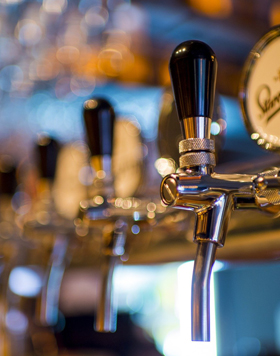
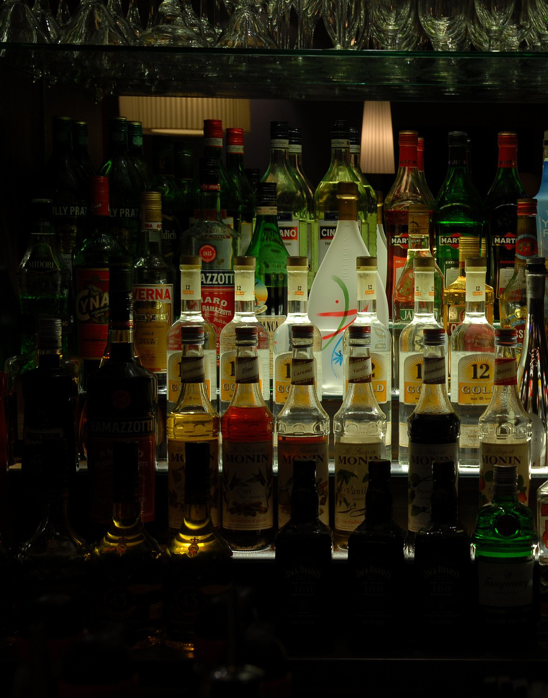
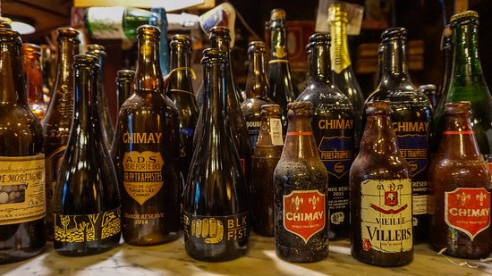
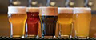

PASIÓN POR LA CERVEZA
Descubrí la historia, los sabores y la cultura cervecera.
CONOCÉ NUESTRA HISTORIANUESTROS ORÍGENES
La cerveza es mucho más que una bebida: es tradición, encuentro y pasión. A lo largo del tiempo, sus sabores y formas de elaboración fueron creando una cultura única.
En Beer queremos compartir con vos este universo, desde los métodos tradicionales hasta las variedades que hacen especial cada experiencia.



CONOCÉ BEER
En Beer compartimos el interés por la cultura, la tradición y la diversidad de la cerveza. Queremos que cada persona descubra nuevos sabores y conozca más sobre su elaboración.

ACTUALIDAD BEER
Existen muchos estilos de cerveza, desde las más suaves y refrescantes hasta las más intensas y aromáticas. Cada variedad ofrece una experiencia diferente.
Conocer sus ingredientes, aromas y métodos de elaboración permite disfrutar aún más de esta tradición.
DÓNDE ENCONTRARNOS
Nuestra ubicación de ejemplo está en Palermo, Ciudad Autónoma de Buenos Aires.
Dirección ilustrativa para el proyecto educativo.
Ver ubicación en el mapa